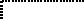

Common Lisp the Language, 2nd Edition
The predicate characterp may be used to determine whether any Lisp object is a character object.
[Function]
standard-char-p char
The argument char must be a character object. standard-char-p is true if the argument is a ``standard character,'' that is, an object of type standard-char.
Note that any character with a non-zero bits or font attribute is non-standard.
[Function]
graphic-char-p char
The argument char must be a character object. graphic-char-p is true if the argument is a ``graphic'' (printing) character, and false if it is a ``non-graphic'' (formatting or control) character. Graphic characters have a standard textual representation as a single glyph, such as A or * or =. By convention, the space character is considered to be graphic. Of the standard characters all but #\Newline are graphic. The semi-standard characters #\Backspace, #\Tab, #\Rubout, #\Linefeed, #\Return, and #\Page are not graphic.
Programs may assume that graphic characters of font 0 are all of the same width when printed, for example, for purposes of columnar formatting. (This does not prohibit the use of a variable-pitch font as font 0, but merely implies that every implementation of Common Lisp must provide some mode of operation in which font 0 is a fixed-pitch font.) Portable programs should assume that, in general, non-graphic characters and characters of other fonts may be of varying widths.
Any character with a non-zero bits attribute is non-graphic.

[Function]
string-char-p char
The argument char must be a character object.
string-char-p is true if char can be stored into
a string, and otherwise is false.
Any character that satisfies standard-char-p
also satisfies string-char-p; others may also.


X3J13 voted in March 1989 (CHARACTER-PROPOSAL)
to eliminate string-char-p.

[Function]
alpha-char-p char
The argument char must be a character object. alpha-char-p is true if the argument is an alphabetic character, and otherwise is false.
If a character is alphabetic, then it is perforce graphic. Therefore any character with a non-zero bits attribute cannot be alphabetic. Whether a character is alphabetic may depend on its font number.
Of the standard characters (as defined by standard-char-p), the letters A through Z and a through z are alphabetic.
[Function]
upper-case-p char
lower-case-p char
both-case-p char
The argument char must be a character object.
upper-case-p is true if the argument is an uppercase character, and otherwise is false.
lower-case-p is true if the argument is a lowercase character, and otherwise is false.
both-case-p is true if the argument is an uppercase character and there is a corresponding lowercase character (which can be obtained using char-downcase), or if the argument is a lowercase character and there is a corresponding uppercase character (which can be obtained using char-upcase).
If a character is either uppercase or lowercase, it is necessarily alphabetic (and therefore is graphic, and therefore has a zero bits attribute). However, it is permissible in theory for an alphabetic character to be neither uppercase nor lowercase (in a non-Roman font, for example).
Of the standard characters (as defined by standard-char-p), the letters A through Z are uppercase and a through z are lowercase.
[Function]
digit-char-p char &optional (radix 10)
The argument char must be a character object, and radix must be a non-negative integer. If char is not a digit of the radix specified by radix, then digit-char-p is false; otherwise it returns a non-negative integer that is the ``weight'' of char in that radix.
Digits are necessarily graphic characters.
Of the standard characters (as defined by standard-char-p), the characters 0 through 9, A through Z, and a through z are digits. The weights of 0 through 9 are the integers 0 through 9, and of A through Z (and also a through z) are 10 through 35. digit-char-p returns the weight for one of these digits if and only if its weight is strictly less than radix. Thus, for example, the digits for radix 16 are
0 1 2 3 4 5 6 7 8 9 A B C D E F
Here is an example of the use of digit-char-p:
(defun convert-string-to-integer (str &optional (radix 10))
"Given a digit string and optional radix, return an integer."
(do ((j 0 (+ j 1))
(n 0 (+ (* n radix)
(or (digit-char-p (char str j) radix)
(error "Bad radix-~D digit: ~C"
radix
(char str j))))))
((= j (length str)) n)))
[Function]
alphanumericp char
The argument char must be a character object. alphanumericp is true if char is either alphabetic or numeric. By definition,
(alphanumericp x) == (or (alpha-char-p x) (not (null (digit-char-p x))))
Alphanumeric characters are therefore necessarily graphic (as defined by the predicate graphic-char-p).
Of the standard characters (as defined by standard-char-p), the characters 0 through 9, A through Z, and a through z are alphanumeric.
[Function]
char= character &rest more-characters
char/= character &rest more-characters
char< character &rest more-characters
char> character &rest more-characters
char<= character &rest more-characters
char>= character &rest more-characters
The arguments must all be character objects. These functions compare the objects using the implementation-dependent total ordering on characters, in a manner analogous to numeric comparisons by = and related functions.
The total ordering on characters is guaranteed to have the following properties:
A<B<C<D<E<F<G<H<I<J<K<L<M<N<O<P<Q<R<S<T<U<V<W<X<Y<Z to 0pta<b<c<d<e<f<g<h<i<j<k<l<m<n<o< p<q<r<s<t<u<v<w<x<y<z 0<1<2<3<4<5<6<7<8<9 either 9<A or Z<0 either 9<a or z<0
This implies that alphabetic ordering holds within each case (upper and lower), and that the digits as a group are not interleaved with letters. However, the ordering or possible interleaving of uppercase letters and lowercase letters is unspecified. (Note that both the ASCII and the EBCDIC character sets conform to this specification. As it happens, neither ordering interleaves uppercase and lowercase letters: in the ASCII ordering, 9<A and Z<a, whereas in the EBCDIC ordering z<A and Z<0.)
X3J13 voted in March 1989 (CHARACTER-PROPOSAL)
to replace the notion of bits and font attributes with
that of implementation-defined attributes.
The total ordering is not necessarily the same as the total ordering on the integers produced by applying char-int to the characters (although it is a reasonable implementation technique to use that ordering).
While alphabetic characters of a given case must be properly ordered, they need not be contiguous; thus (char<= #\a x #\z) is not a valid way of determining whether or not x is a lowercase letter. That is why a separate lower-case-p predicate is provided.
(char= #\d #\d) is true. (char/= #\d #\d) is false. (char= #\d #\x) is false. (char/= #\d #\x) is true. (char= #\d #\D) is false. (char/= #\d #\D) is true. (char= #\d #\d #\d #\d) is true. (char/= #\d #\d #\d #\d) is false. (char= #\d #\d #\x #\d) is false. (char/= #\d #\d #\x #\d) is false. (char= #\d #\y #\x #\c) is false. (char/= #\d #\y #\x #\c) is true. (char= #\d #\c #\d) is false. (char/= #\d #\c #\d) is false. (char< #\d #\x) is true. (char<= #\d #\x) is true. (char< #\d #\d) is false. (char<= #\d #\d) is true. (char< #\a #\e #\y #\z) is true. (char<= #\a #\e #\y #\z) is true. (char< #\a #\e #\e #\y) is false. (char<= #\a #\e #\e #\y) is true. (char> #\e #\d) is true. (char>= #\e #\d) is true. (char> #\d #\c #\b #\a) is true. (char>= #\d #\c #\b #\a) is true. (char> #\d #\d #\c #\a) is false. (char>= #\d #\d #\c #\a) is true. (char> #\e #\d #\b #\c #\a) is false. (char>= #\e #\d #\b #\c #\a) is false. (char> #\z #\A) may be true or false. (char> #\Z #\a) may be true or false.
There is no requirement that (eq c1 c2) be true merely because (char= c1 c2) is true. While eq may distinguish two character objects that char= does not, it is distinguishing them not as characters, but in some sense on the basis of a lower-level implementation characteristic. (Of course, if (eq c1 c2) is true, then one may expect (char= c1 c2) to be true.) However, eql and equal compare character objects in the same way that char= does.
[Function]
char-equal character &rest more-characters
char-not-equal character &rest more-characters
char-lessp character &rest more-characters
char-greaterp character &rest more-characters
char-not-greaterp character &rest more-characters
char-not-lessp character &rest more-characters
The predicate char-equal is like char=, and similarly
for the others, except according to a different ordering such that
differences of bits attributes and case are ignored,
and font information is taken into account in an implementation-dependent
manner.
X3J13 voted in March 1989 (CHARACTER-PROPOSAL)
to replace the notion of bits and font attributes with
that of implementation-defined attributes. The effect, if any,
of each such attribute on the behavior of
char-equal, char-not-equal, char-lessp, char-greaterp,
char-not-greaterp, and char-not-lessp must be specified
as part of the definition of that attribute.
For the standard characters, the ordering is such that A=a, B=b, and so on, up to Z=z, and furthermore either 9<A or Z<0. For example:
(char-equal #\A #\a) is true. (char= #\A #\a) is false. (char-equal #\A #\Control-A) is true.
The ordering may depend on the font information. For example, an implementation
might decree that (char-equal #\p #\p) be true, but that
(char-equal #\p #\pi) be false
(where #\pi is a
lowercase p in some font). Assuming italics to be in font 1
and the Greek alphabet in font 2, this is the same as saying that
(char-equal #0\p #1\p) may be true and at the same time
(char-equal #0\p #2\p) may be false.